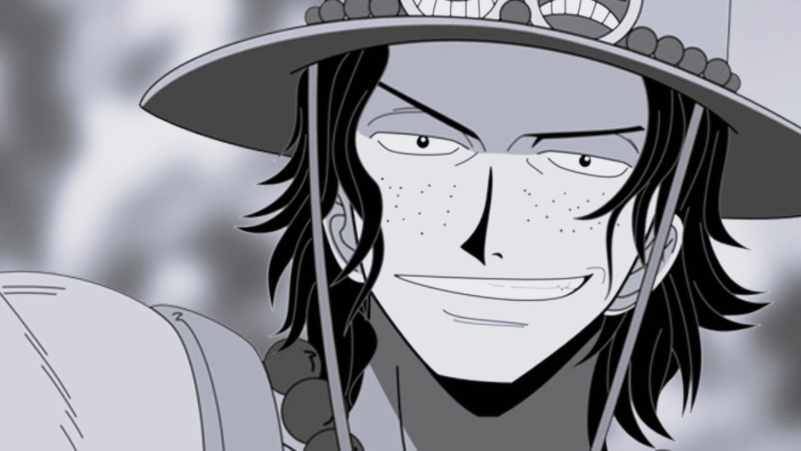

Portgas D. Ace
The Fire Fist of Freedom

Radiating warmth with every smile 🔥
Early Life and Heritage:
- Ace's birth name, Gol D. Ace, revealed his lineage as the son of the legendary Pirate King, Gol D. Roger.
- His mother, Portgas D. Rouge, kept his identity a secret, protecting him from those seeking to exploit his heritage.
- Raised by the kind-hearted bandit, Curly Dadan, in the Goa Kingdom alongside Monkey D. Luffy.
Journey of Freedom and Adventure:
- Formed his own pirate crew, the Spade Pirates, and became their captain at a young age.
- Sought freedom and independence, leaving behind his title as Roger's son to forge his own path in the world.
- Aboard his ship, the Striker, Ace ventured into the Grand Line, facing challenges and strengthening his crew.
Mera Mera no Mi - The Flame-Flame Fruit:
- Encountered the Mera Mera no Mi, a powerful Logia-type Devil Fruit that grants control over fire.
- Ate the fruit, gaining the ability to create, control, and transform into fire, earning the moniker "Fire Fist Ace."
- This Devil Fruit became an essential part of his combat style and reputation as a fearsome fighter.
The Whitebeard Pirates:
- Fate brought Ace into the orbit of the mighty Whitebeard Pirates, one of the Four Emperors of the sea.
- Whitebeard, the formidable and caring pirate captain, recognized Ace's potential and adopted him into his crew.
- Earned the position of Second Division Commander, leading his division with strength and compassion.
Summit War - The Turning Point:
- Ace's life became intertwined with the events of the Summit War, a massive clash involving pirates, marines, and revolutionaries.
- His capture by the Blackbeard Pirates, led by Blackbeard (Marshall D. Teach), set in motion a chain of events that shook the world.
- The news of his impending execution led his brother, Monkey D. Luffy, and the Straw Hat Pirates to undertake a daring rescue mission.
Legacy and Sacrifice:
- Ace's legacy is deeply intertwined with his role as Luffy's older brother, influencing his journey to become the Pirate King.
- His unwavering loyalty and sacrifice for his family and friends left a profound impact on those who knew him.
- Ace's final moments were filled with gratitude for having found true friends and declaring that he had "no regrets."
The Impact on the World:
- Ace's death resonated far beyond the confines of the One Piece world, stirring emotions among fans and characters alike.
- The Summit War and its aftermath marked a significant turning point in the story, leading to major shifts in power dynamics.
- His will and spirit lived on in Luffy, who inherited Ace's determination and continues to carry his dreams forward.
Remembering the Fire Fist:
- The Spade Pirates and the Whitebeard Pirates commemorate Ace's bravery and loyalty, cherishing his memory.
- Ace's grave on the small island of Banaro remains a symbolic place of remembrance for those who knew him.
- Fans around the world pay tribute to Ace's character and the impact he had on the beloved manga and anime series, One Piece.
"Ace, my son... You weren't just born to be my successor. You carry your own will. You carry Roger's blood in your veins. And with it, you will forge a path all your own."
-- Edward Newgate (Whitebeard) about Portgas D. Ace
Take a deeper dive into Ace's captivating adventures and legacy on his One Piece Wiki entry.